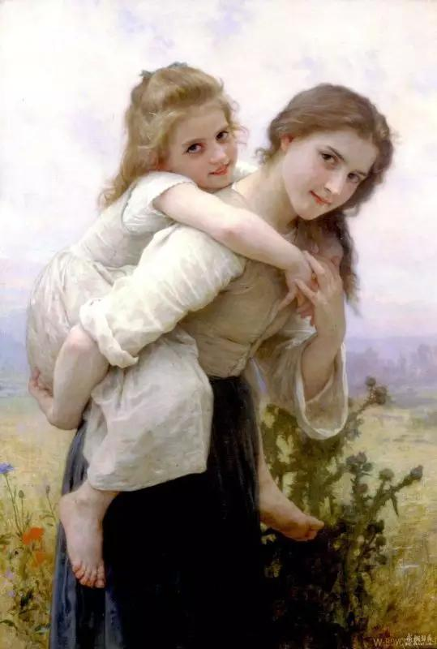
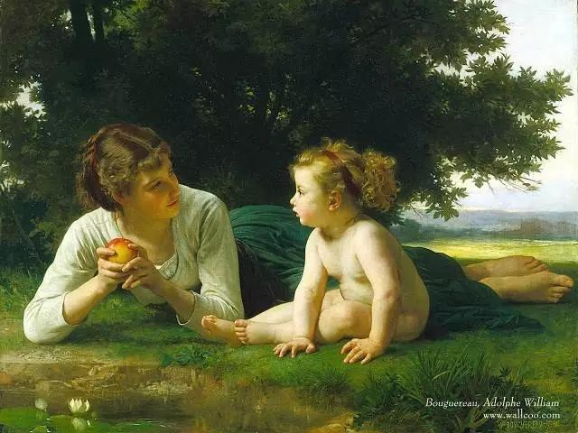
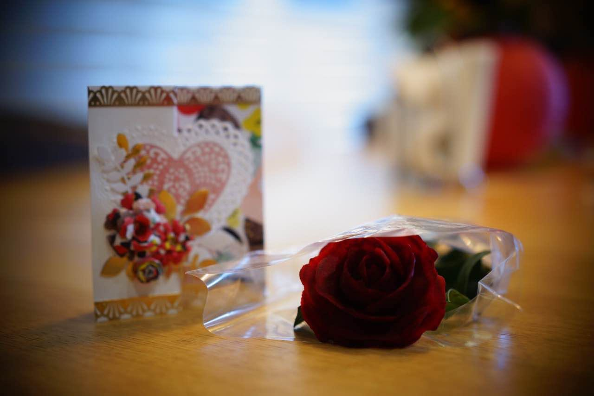
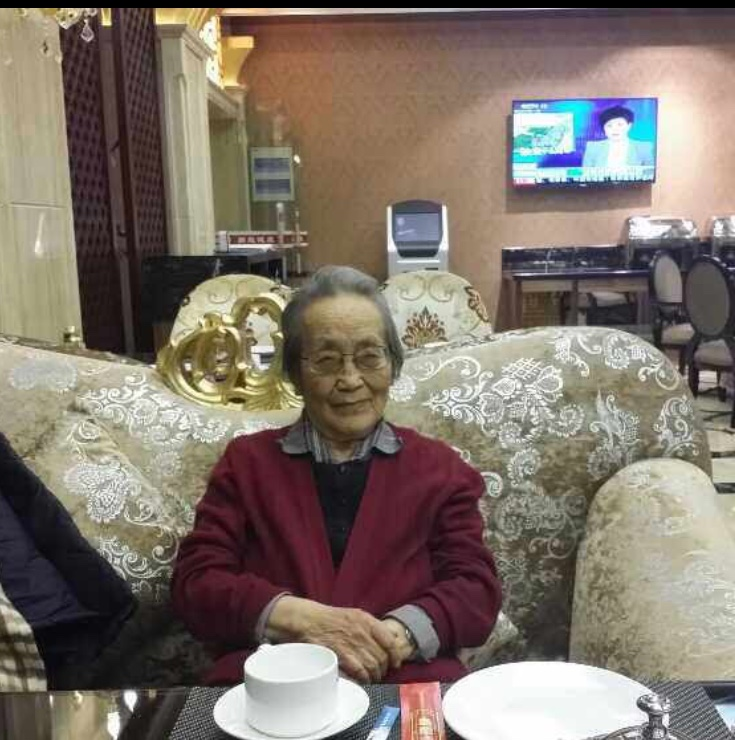
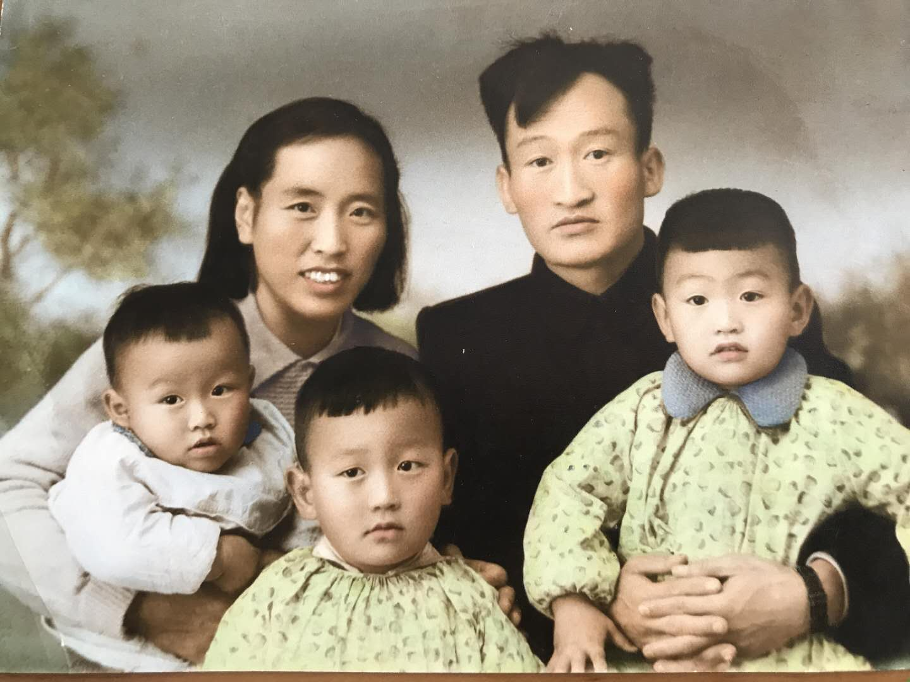

—— 我的父亲母亲

5.12.2019
| 厨艺•读书•有趣的人 —— 我的父亲母亲 |
| 作者 乔颖 |
| 朗诵 六月 |
|
| 在我玩伴的圈子中，我的厨艺可以说是出了名地糟糕。每每聚会，人们八仙过海骄傲自豪之时, 往往便是我成为人们嘲讽的对象之日, 因为我总是忍不住问些浅显又傻气的问题。对于人们的嘲讽，我向来不以为然。倒对儿子和老公着实地间歇式地感到内疚和不安, 毕竟由于自己的低能致使他们无法得到尽心尽责地照顾。然而，虽然知道自己不够好, 我却固执至极,从不曾试图改变自己。想来,这一切应该源自于母亲。因为我母亲不倡导我们做家务，所以从我内心深处, 想必也是厌恶做家务的！ |
|  |
| 我父母都是医生。我在医生的家庭氛围中长大。母亲在哥哥姐姐和我很小的时候就告诉我们要好好读书，不要把时间浪费在不必要的琐事上, 诸如闺密们都在学习和互相交流打毛衣的技巧, 比如男孩子早早干零工补贴家用等等此类事情…父亲常常趁我们不防备突然推门而入我们的房间,检查我们是否在学习。常看小说的我，必是最狼狈的那个，忙不迭地把书藏起来，面对险情，必须承认, 我反应极快, 因而不曾没被父亲发现过, 虽最终总能侥幸过关, 惊出一身身的汗却也是免不了的！父亲还要查看的是我们看书时眼睛与书本的距离，一把尺子便是他的测量工具，父亲还亲手写了“注意姿势＂毛笔字横幅，挂在桌子上方的墙上,供我们自查... 无论何时,只要不太晚,父母看到我们在学习，他们便发自内心地高兴。他们包揽了所有的家务，不让我们分神。父母为我们订了三十种各类杂志、书刊，外加几书架的书供我们阅读。记得新一期杂志发行的那几日，我们所有人都会关注家里是否有新邮件，因为谁都想抢先拿到阅读权，而谁最终拿到了这个权利，都会在他人妒忌和羡慕中庆幸着激动着。我们兄弟姊妹在这样的家庭环境和氛围中熏陶着，虽不是满腹经纶，书卷气十足，倒也沾染了一些文化气息。 |
|  |
| 父母重视教育但对我们的培养却不呆板。父母深信＂人无痞不可交＂。身为高知的父母亲都是多才多艺的。在她们靡下成长的我们自然是爱读书但不痴学。家人聚会的时候，内容总是丰富的。下棋，打牌，唱歌…文的武的，样样能来。说起来,我们家最热闹的时候还得算每年的春节。每当那时，趁 大家都有闲的时候，父亲便会组织家庭钢笔字，棋类，牌类，才艺和球类大赛。我们都期待着自己的名次会提升，盼望着父母赞许的目光投向的是自己。父亲还会带我们冲出家庭，参加全区，全市的家庭团体赛事，如乒乓球赛。我们的战绩总是傲人的！我们每年都会满载奖品浩浩荡荡地回家，而母亲总会用美食犒赏我们。 |
|  |
| 父亲母亲都是有趣的人。父亲满世界出差的时候，总会带给我们最新最稀奇的玩具，记得有一次, 父亲用母亲的一只金手镯换了一提箱的玩具。趁我们熟睡时，他将玩具吊在屋顶、摆在窗台上、地上。清晨我们一睁眼，环顾四周，发现满屋的好看好玩的东西，真的会有幻觉，不禁问自己,我醒着还是梦中？那个惊喜的程度不言而喻，至今想起来都记忆犹新！当然，父亲得到的是母亲好一阵子地埋怨和唠叨，那是后话。而母亲带给我们的是各地的特产小吃和奇闻轶事。 所以母亲出差回家的日子，就是我们一边品尝小吃，一边听着故事的极其享受的美妙瞬间。真地很庆幸有这样有趣永远不失童心的父母陪着我们长大。这样的环境下成长起来的我们都爱玩爱闹, 不难发现我们兄弟姊妹的身上都或多或少传承了父母所有所想所愿的一些品质呢。 |
|  |
| 转眼间父亲已离开我们35年了。无比思念父亲的同时, 心里也存安慰, 因为我92岁的母亲健在! 她戴着粉色镜框的眼镜，背不驼、耳不聋、腿不弯的样子帅气十足，依旧做饭干家务活儿并坚持每天按摩的她令人肃然起敬，听着并时不时地跟着哼唱齐峰的＜我的根在草原＞的样子纯真可爱，电话里遥祝我生日快乐时母亲的声音年依然年轻动人！她以她在92岁这个高龄上所表现出来的勤奋、克己、独立、自律和俏皮，继续丰满着我们的认知，激励着我们前行。 |
|  |
| 说到底我是不能给我的家人提供精美的三餐的，因为我缺乏那样地能力。好在他们真地不是特别在意吃什么，好在我们可以遍吃馆子来满足我们一时兴起的食欲。其实，倘若真能把父母给的有趣及精神层面的丰富多彩传递下去、并带给我家人有色彩的生活，我便是开心的。美学大师朱光潜认为“趣味，是对生命的澈悟和留恋” 。那么有趣并保持有趣，又需要我们不断践行梭伦的＂活到老，学到老＂这句名言。为着有趣, 并由于有趣而活出愉悦、自在、本真的自我，我们需要不断地学习，需要终身学习并时刻储备着… |
|
母亲节 于亚特兰大 5.12.2019 |